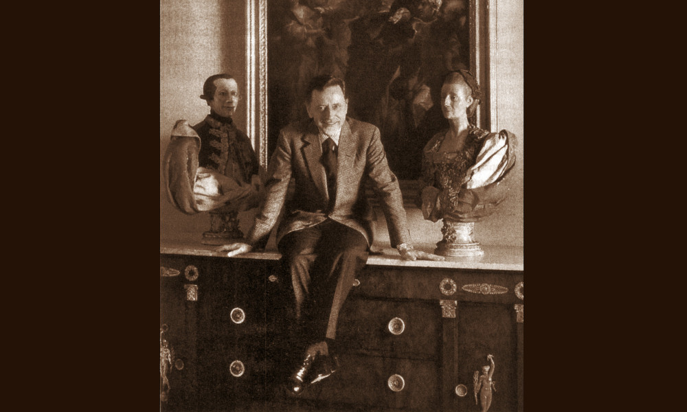

Apolloni

- Dati biografici
- Albero familiare
- Luoghi
- Relazioni
- Bibliografia
- Opere trattate
Il fondatore della galleria romana Apolloni fu Wladimiro (1888-1948), decimo di una famiglia molto numerosa. Dopo varie esperienze lavorative in diversi settori, aprì, nel 1926, una galleria d'antichità in via Frattina, al civico 141.
Dopo la sua morte, avvenuta nel 1948, il negozio di antichità fu gestito dal figlio Fabrizio (1928-2006), che fin da giovane aveva iniziato a lavorare con il padre. Questi diede nuovo impulso all'attività, anche grazie al supporto di colleghi, tra i quali Pietro Accorsi (1891-1982), noto antiquario torinese. A partire dalla fine degli anni Quaranta, il mercante romano iniziò a viaggiare verso l'Inghilterra, dove si recava per comprare quadri italiani da immettere sul mercato nazionale, e nel corso degli anni Cinquanta frequentò New York, allora centro nevralgico del commercio.
Nel 1970 Apolloni spostò la galleria in via del Babuino 132. Con il passare del tempo l'antiquario strinse rapporti con Giuliano Briganti e Mario Praz. Proprio grazie all'amicizia che lo legò a Praz, Fabrizio si avvicinò all'arte neoclassica. Inoltre, la passione per le arti decorative e il mobilio antico lo portò a instaurare un felice legame con Alvar González-Palacios, come ricorda lo stesso storico dell'arte nel suo libro Persone e maschere.
Apolloni stimò molto anche Federico Zeri, tanto da finanziare nel 1977, insieme al gallerista torinese Mario Tazzoli (1921-1990), la rivista <
Il figlio di Fabrizio, Marco Fabio, ha preso le redini dell'attività famigliare alla morte del padre, avvenuta nel 2006.
Nel 2018, la galleria "W. Apolloni" si è spostata in via Margutta 53b, negli spazi di Palazzo Patrizi, sede in precedenza dell'Accademia Britannica e poi della galleria antiquaria di Massimo Tuena.
Altri antiquari:
Clienti:
Collaboratori:
- Alvar Gonzales Palacios (storico dell'arte)
- Giuliano Briganti (storico dell'arte)
- Mario Praz (critico dell'arte)
Bibliografia essenziale:
- González-Palacios, A. (2014), Persona e maschera: collezionisti, antiquari e storici dell'arte, Milano, Archinto
- Riccio, B. (Ed.) (1996), Lettere sull’antiquariato?: di Mario Praz e Luigi Magnani 1952-1981, Torino, U. Allemandi, p. 116
Interviste:
- 09/06/2023, Intervista a Marco Fabio Apolloni, Roma
Vedi le opere transitate presso l'antiquario presenti nel catalogo della Fondazione Zeri